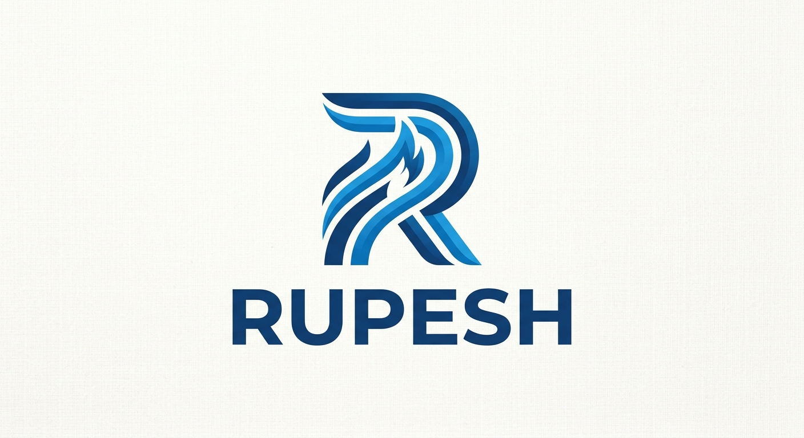

My name is Rupesh. I am a simple, friendly, and hardworking person who believes in learning from every experience in life. I enjoy spending time with the people I care about and always try to improve myself. I am motivated to achieve my goals, face challenges with confidence, and build a successful and meaningful future.I believe that honesty, kindness, and determination are important qualities, and I try to carry them with me in everything I do.
My project is an Online Food Delivery Website designed to help customers easily browse restaurants, view food menus, and order their favorite meals online. The website will provide different categories of food such as pizza, burgers, noodles, momo, and other popular dishes. Customers can create an account, search for food, add items to a shopping cart, place orders, and view their order status. The website will also include restaurant information, food prices, ratings, reviews, and special offers. An admin panel can be used to manage restaurants, food items, prices, customers, and orders. The main goal of this project is to create a simple, attractive, and user-friendly platform that makes ordering food faster and more convenient.
I have skills in web development, networking, and basic programming. I am familiar with HTML, CSS, and JavaScript for creating and designing websites. I also have basic knowledge of computer networks, troubleshooting, and network security. In addition, I can work with tools such as Cisco Packet Tracer, Wireshark, and VirtualBox. I have good problem-solving, communication, teamwork, and time-management skills, and I am continuously learning new technologies to improve my technical abilities.
Email: rupeshhoni23@gmail.com
Mob No. 9745369554